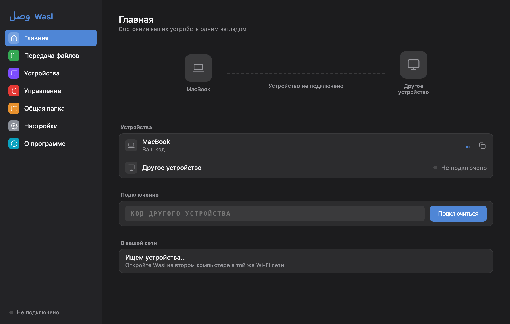

01Work
Design.Build. Ship.
I design and build digital products — from interface and product logic to working software.
The goal is simple: make something useful, make it feel right, and actually ship it.
02Qayd
QaydCommerce
A mobile-first system for small stores: products, inventory, sales, finance, team workflows and a storefront in one compact workspace.
Telegram Mini App · In daily use
Real app · demo data
Telegram Mini App · In daily use
WaslFileEditViewWindow
Mon 10:24
Wasl

03Wasl
Two Machines.One Workspace.
Wasl connects macOS and Windows into one workspace — shared cursor, clipboard, files, audio and deeper cross-device interaction.
Real app · v0.9
macOS · Windows · Local network
Download Wasl04Contact
MakeSomething Useful.
Product interfaces, web applications, prototypes, automation and focused software work.
Available for selected freelance and product work.